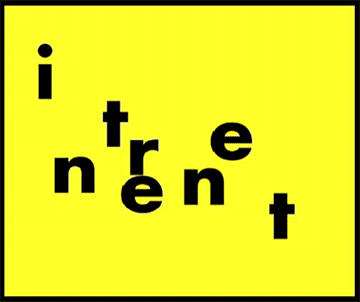
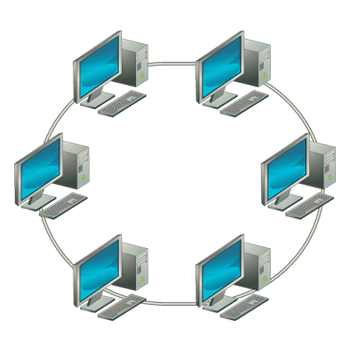
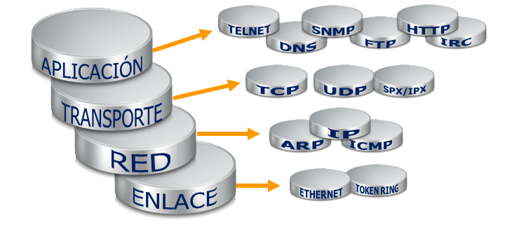
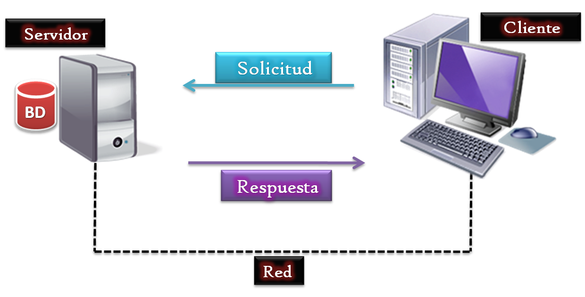
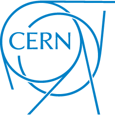
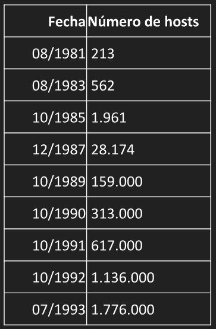

Your browser
doesn't support the features required by impress.js, so you are presented with a simplified version of this
presentation.
For the best experience please use the latest
Chrome,
Safari or
Firefox browser.

La red de ordenadores más extensa que existe en la actualidad


Gracias a unas normas y estándares comunes pueden comunicarse e intercambiar información todos los ordenadores conectados
a dicha red
La arquitectura que da soporte a Internet es la denominada
cliente/servidor

Protocolo TCP/IP
Transfer Control Protocol/Internet Protocol
Es necesario que cada máquina posea una identificación única
1989
Sistema de comunicación entre los científicos del CENR

1990
Sistema de hipertexto Enquire

Sir Tim berners-Lee
1994
Se funda el World Wide Web Consortium entre EUA y el CERN
Crecimiento exponencial
En 1993, Internet contenía 13.170 redes nacionales e internacionales

2018
El número de usuarios de Internet en el mundo supera el 50% de la población: 4 000 millones